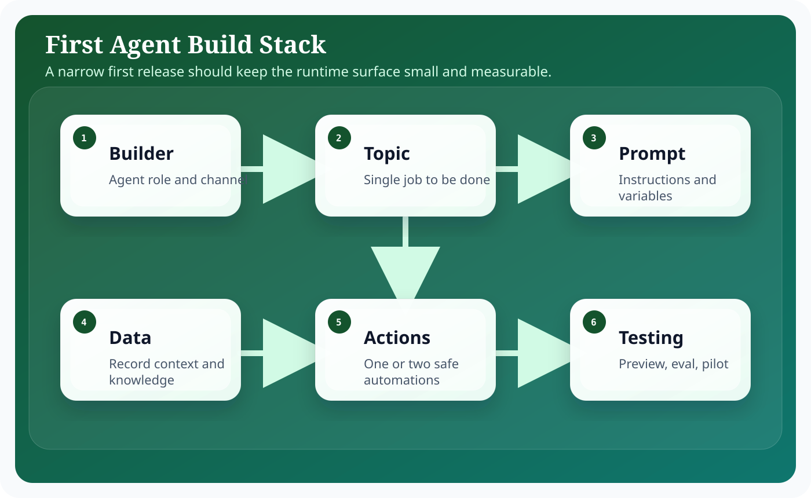
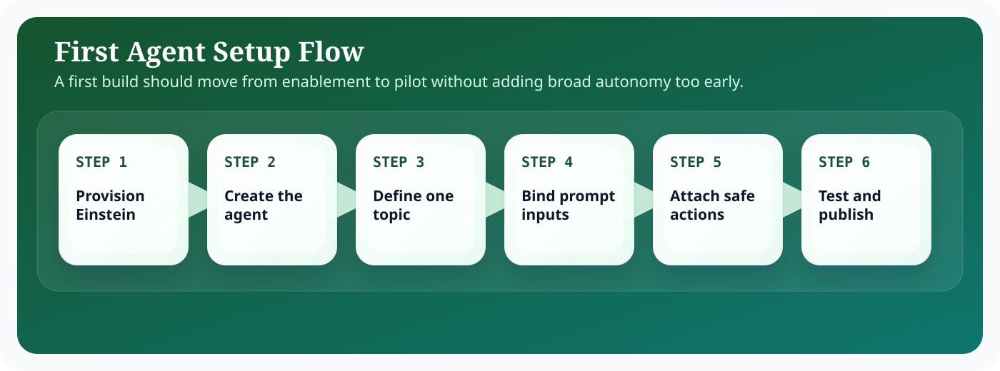

Introduction
Salesforce Agentforce matters because enterprise teams do not need another isolated chatbot; they need an execution surface that can reason over business context, stay inside platform controls, and complete work across Salesforce workflows. In practical terms, that means combining language understanding with CRM records, metadata, automation, and operational policy. The most useful framing is to treat Agentforce as an orchestration layer sitting between human intent and governed business actions.
For architects, admins, and developers, the design question is not whether an LLM can produce fluent output. The harder question is how you bound that output with trusted data, deterministic automations, explicit approvals, and observability. This guide focuses on the implementation tradeoffs, runtime boundaries, and delivery decisions that shape implementation work in Agentforce. That is why successful Agentforce implementations start from architecture, identity, and process design before they focus on polished conversational experiences.
A strong Implementation implementation usually follows the same pattern: define the business objective, identify the records and actions the agent can use, design prompts that encode policy and tone, expose actions through Flow or Apex, and then measure outcomes with operational telemetry. This pattern keeps the solution explainable and creates a handoff model that admins, architects, developers, and service leaders can all understand.
Architecture explanation
For a first implementation, the architecture should stay intentionally small. A narrow slice with one channel, one prompt family, one data grounding path, and a handful of safe actions creates the fastest route to a credible first release.
A first agent should be designed around one topic and a small action set. Salesforce guidance and workshops consistently show that early success comes from constrained scope, grounded context, and testable actions rather than a wide, loosely controlled assistant.
How to Build Your First AI Agent in Salesforce Agentforce works best when the architecture separates conversational intent from deterministic execution. Topics and instructions tell the agent what kind of work it is doing. Grounding layers bring in trusted business facts from Salesforce data, knowledge, Data Cloud, or external systems. Actions then convert the plan into platform work through Flow, Apex, or governed API calls. Trust controls wrap the entire path so data access, generated output, and side effects remain observable and policy-bound.

These layers are useful because they help teams decide where a problem belongs. If the answer is wrong, the issue may sit in grounding. If the action is unsafe, the problem sits in permissions or execution validation. If the result is verbose or inconsistent, the issue is often in prompting or output schema. Separating the architecture this way keeps debugging concrete, which is essential when an implementation grows across multiple teams.
In enterprise delivery, it also helps to think about control planes versus data planes. The control plane contains metadata, prompts, access policy, model selection, testing, and release procedures. The data plane contains the live customer conversation, retrieved records, outbound actions, and operational telemetry. This distinction prevents teams from mixing authoring concerns with runtime concerns and makes promotion across sandboxes significantly easier.
The most reliable Agentforce implementations keep the model responsible for reasoning and language, while deterministic platform services remain responsible for data integrity, approvals, and side effects.
Step-by-step configuration
Configuration work succeeds when the team treats Agentforce setup as a sequence of platform decisions rather than a single wizard. The steps below reflect the order that keeps dependencies visible and avoids rework later in the release.

For a first build, the diagram deliberately emphasizes sequence. If the team adds actions or broad channel coverage before the topic and prompt are stable, troubleshooting becomes harder and pilot feedback becomes noisy.
- Enable the required Salesforce features in a sandbox and confirm the org has the right Agentforce-related setup completed.
- Choose a narrow use case, such as summarizing an account and logging a follow-up task, rather than a broad support assistant.
- Create the agent persona, define its purpose, and map the exact records it can reference.
- Build a prompt template with clear instructions, input variables, grounding context, and output format expectations.
- Add one or two safe actions implemented with Flow or Apex so the agent can do more than just answer questions.
- Run iterative test conversations, tune the prompt, and review every failed response to improve grounding and fallback behavior.
- Promote only after the pilot shows reliable accuracy, readable summaries, and safe action execution.
In the first release, observability beats breadth. Instrument prompt outcomes, action invocation counts, latency, and user corrections. Those signals tell you whether the agent is ready for a second use case or whether the first use case still has unresolved quality debt.
Code examples
Enterprise teams need concrete implementation patterns because agent behavior eventually resolves into platform metadata and code. For a first implementation, the most useful examples are a tight prompt contract and a single low-risk automation that proves the agent can both reason and act.
First agent prompt contract
{
"topic": "account-briefing",
"goal": "Prepare a concise account summary before a seller starts outreach.",
"inputs": {
"accountId": "{!.Id}",
"openOpportunities": "{!Get_Open_Opportunities}",
"recentActivities": "{!Get_Recent_Activities}"
},
"outputSchema": {
"summary": "string",
"risks": ["string"],
"nextAction": "string"
},
"fallback": "If recent activities are missing, ask the user whether to continue with CRM-only context."
}Flow action for follow-up task
<Flow xmlns="http://soap.sforce.com/2006/04/metadata">
<recordCreates>
<name>CreateFollowUpTask</name>
<label>Create Follow-Up Task</label>
<inputAssignments>
<field>WhatId</field>
<value><elementReference>.Id</elementReference></value>
</inputAssignments>
<inputAssignments>
<field>Subject</field>
<value><stringValue>Agentforce follow-up</stringValue></value>
</inputAssignments>
</recordCreates>
</Flow>Operating model and delivery guidance
Agentforce projects become easier to sustain when the delivery model is explicit. Administrators typically own prompt authoring, channel setup, and low-code automations. Developers own custom actions, advanced integrations, and test harnesses. Architects own the capability boundary, trust assumptions, and release model. Service or sales operations leaders own business acceptance and the definition of success.
That separation matters because long-term quality depends on ownership. If everyone can tune everything, nobody can explain why behavior changed. If prompts, flows, and actions are versioned with release notes, then a regression can be traced back to a concrete modification. This is the same discipline teams already apply to code; Agentforce just expands the surface area that needs that discipline.
It is also useful to define an evidence loop. Capture representative transcripts, measure action success rate, compare containment against downstream business metrics, and review edge cases at a fixed cadence. Over time, this evidence loop becomes more valuable than intuition. It tells you whether a prompt change improved quality, whether a new action reduced manual effort, and whether an escalation rule is too sensitive or too lax.
Teams should also decide how documentation, enablement, and support ownership work after launch. A static runbook for incident handling, a changelog for prompt revisions, and a named owner for every high-impact action are simple controls that prevent ambiguity when the agent starts operating at scale.
Best practices
- Start with one measurable use case.
- Resist adding too many actions in the first release.
- Capture failed prompts and review them weekly.
- Document fallback behavior for ambiguous requests.
- Pilot with expert users before opening the audience.
Conclusion
The best first Agentforce project is the one that proves execution quality, not the one that tries to automate everything at once. Start small, ground the model carefully, expose only safe actions, and measure the result. That creates a practical base for broader AI capability on Salesforce.
For Salesforce teams, the practical lesson is consistent: start from business flow, ground the model on trusted enterprise context, expose only the actions you can govern, and measure what the agent actually changes in production. That is how Agentforce becomes a durable platform capability instead of a short-lived proof of concept.